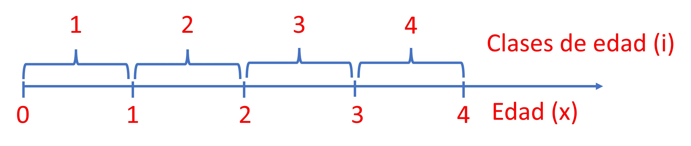
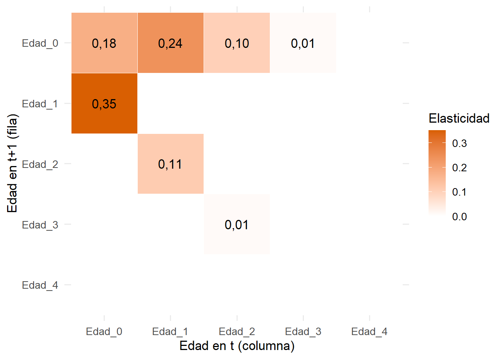
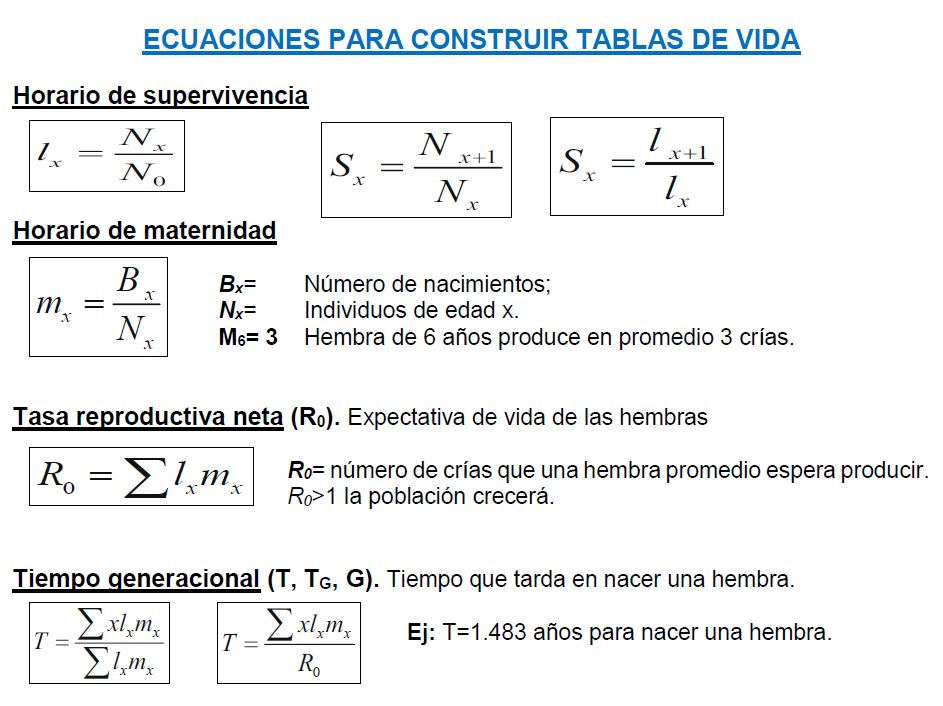

Se examina cómo la estructura interna de una población (su distribución por edades) determina su dinámica en el tiempo. A partir de los estimadores de una tabla de vida, el taller aborda cuatro temáticas:
Organizar la fecundidad (F_x) y la supervivencia (S_x) en matrices de Leslie (L), para censos post y pre-reproductivos.
Proyectar la densidad poblacional por edades en el tiempo mediante simulaciones (N_{t+1} = L \cdot N_t).
Calcular las propiedades emergentes de la matriz: la tasa finita de crecimiento (\lambda), la distribución estable de edades (c_x) y el valor reproductivo (v_x).
Evaluar el efecto de cambios en las tasas vitales mediante análisis de sensibilidad (S_{ij}) y elasticidad (e_{ij}).
Para algunos estudiantes o investigadores, el trabajo con tablas de vida puede ser demandante de tiempo, algo confuso y tedioso en cuanto a la estimación de parámetros de supervivencia, reproducción y otros como la esperanza de vida (e_x), la distribución estable de edades (c_x) o el valor reproductivo (v_x). Los sistemas matriciales, con la ayuda de programas computacionales como Excel o R, ofrecen una alternativa práctica para obtener estos estimadores y, al mismo tiempo, simular la densidad de la población por edades o estados (N_t) a lo largo del tiempo.
La ecología de poblaciones, además de estimar cuántos individuos hay en una muestra poblacional, busca determinar cómo cambian en el tiempo y por qué, incorporando la estructura de la población (su distribución por edades o por estados de crecimiento) y la contribución de cada clase a la supervivencia, la mortalidad y la reproducción (Begon et al., 2006; Krebs, 2009). En este sentido, dos poblaciones con el mismo número de individuos pueden tener proyecciones muy diferentes si una está dominada por juveniles y la otra por adultos reproductivos.
A partir de las tasas vitales de una tabla de vida se construyen diseños matriciales que permiten proyectar la dinámica de poblaciones estructuradas en vectores de edades. Las matrices de Leslie ofrecen el esquema básico de transiciones del ciclo de vida por edades, y a partir de esta organización se pueden simular trayectorias futuras y analizar propiedades multiedad como la tasa asintótica de crecimiento (\lambda) o el valor reproductivo (Caswell, 2001). En términos prácticos, esto permite responder preguntas de conservación y manejo como:
¿Qué etapas del ciclo de vida determinan el crecimiento poblacional?
¿Qué tan estable es la estructura de edades de la población?
¿Qué etapa debería priorizarse: la supervivencia de juveniles o la fecundidad de los adultos?
¿Qué medidas de manejo serían más efectivas en una especie amenazada o, por el contrario, en una especie invasora?
Objetivos
Objetivo general. Construir y analizar modelos matriciales de Leslie a partir de una tabla de vida, para proyectar la dinámica de una población estructurada por edades e interpretar ecológicamente sus propiedades emergentes.
Objetivos específicos.
Parametrizar matrices de Leslie post y pre-reproductivas a partir de los estimadores de una tabla de vida (N_x, S_x, F_x).
Proyectar la densidad poblacional por edades mediante simulaciones multiedad en R.
Calcular e interpretar \lambda, c_x y v_x como propiedades del ciclo de vida, y compararlos con los obtenidos a partir de la tabla de vida.
Identificar las tasas vitales que más influyen en \lambda mediante análisis de sensibilidad y elasticidad.
Reconocer los supuestos y fuentes de sesgo del modelo, en especial los asociados al momento del censo (pre o post-reproductivo).
Marco conceptual
Notación de variables y constantes del sistema
Existen dos formas comunes de organizar una tabla de vida: (1) por edades (x) y (2) por clases de edad (i). Se utiliza la notación por edades (x) cuando el censo se ha realizado directamente en esa escala, como se hizo en el taller anterior de tablas de vida. En la notación por clases de edad, un individuo de la clase i se encuentra entre las edades i-1 e i; por ejemplo, la clase 1 agrupa a los individuos entre las edades 0 y 1.

De acuerdo con Bonilla (2004) y Gotelli (2008), para propósitos de modelación matricial la supervivencia que en las tablas de vida se escribe como S_x se expresa por clases como P_i, y la fecundidad F_x como F_i. En este taller se trabaja con la notación por edades (x), manteniendo continuidad con el taller anterior.
Símbolo
Significado
x
Edad
N_x
Número de individuos vivos al inicio de la edad x
l_x
Proporción de la cohorte inicial que llega viva a la edad x
S_x
Probabilidad de que un individuo de edad x sobreviva a la edad x+1
m_x
Maternidad: crías hembra producidas por una madre de edad x
F_x
Fecundidad o fertilidad: aporte de reclutas que entra a la matriz
L
Matriz de Leslie
\lambda
Tasa finita de crecimiento (autovalor dominante de L)
c_x
Distribución estable de edades (autovector derecho de L)
v_x
Valor reproductivo (autovector izquierdo de L)
Maternidad y patrones reproductivos
El horario de maternidad (m_x o b_x) es el número de crías o recién nacidas hembra que produce, por unidad de tiempo, una madre de una edad particular. Por ejemplo, si m_3 = 3, las madres de 3 años producen en promedio 3 crías que aportan a la población. Normalmente los modelos de poblaciones se construyen solo con las hembras o individuos capaces de producir descendientes. Para la modelación se debe tener en cuenta el patrón reproductivo de la población:
Semélpara (en fauna) o monocárpica (en vegetación). Hay un solo evento reproductivo en una edad o clase de edad específica, por lo que m_x tendrá ceros en todas las edades excepto en una. Ej. salmones o algunas especies vegetales.
Iterópara (en fauna) o policárpica (en vegetación). La reproducción se da en repetidas ocasiones a lo largo del ciclo de vida. Ej. mamíferos o muchos árboles.
Poblaciones anuales o perennes. Las que viven durante un año y las que se mantienen durante varios años.
Estimadores de supervivencia y fecundidad
Por edades (x)
Proporción de supervivencia (horario de supervivencia): l_x = \dfrac{N_x}{N_0}
Probabilidad de supervivencia a la edad siguiente: S_x = \dfrac{N_{x+1}}{N_x}
Fecundidad o fertilidad, según el momento del censo:
Censo pre-reproductivo: F_x = S_0 \cdot m_{x+1}
Censo post-reproductivo: F_x = S_x \cdot m_{x+1}
En ambos casos la fecundidad que entra a la matriz no es la maternidad cruda (m_x), sino el aporte de reclutas que sobreviven hasta el siguiente censo. Por eso se multiplica por una supervivencia: la de los recién nacidos (S_0) en el censo pre-reproductivo, o la de las madres hasta el siguiente evento reproductivo (S_x) en el post-reproductivo.
Por clases de edad (i)
Supervivencia: P_i = \dfrac{l_i}{l_{i-1}}
Fecundidad: F_i = m_i \cdot P_i
Esta forma de organizar los datos no se desarrolla en los ejercicios de este taller; para mayores detalles se sugiere revisar el capítulo 3 de Gotelli (2008).
Matrices de Leslie
El paso desde las tablas de vida hacia los modelos matriciales fue formalizado por Leslie (1945, 1948), quien demostró que el crecimiento de una población estructurada por edades podía expresarse mediante álgebra matricial:
N_{t+1} = L \cdot N_t
Esta ecuación indica que el vector de la población en el tiempo siguiente (N_{t+1}) es igual al producto de la matriz de Leslie (L, constante) por el vector de la población en el tiempo actual (N_t). La consolidación moderna de estos modelos se encuentra en Caswell (2001), texto de referencia en modelación estructurada por edades y por estados.
Una matriz de Leslie se puede leer como un balance de masas: las entradas a la población son los nacimientos (fecundidades, en la primera fila), el almacenamiento es la densidad por edades (N_x) y las salidas son las muertes, implícitas en las supervivencias (S_x, en la subdiagonal). Cada columna de la matriz es la edad en el tiempo t y cada fila es la edad en el tiempo t+1; el resto de elementos son ceros. El modelo asume que (Caswell, 2001):
Las tasas vitales (S_x y F_x) son constantes en el tiempo.
Las transiciones entre edades son estrictas: cada individuo que sobrevive avanza a la edad siguiente.
No hay retrocesos ni permanencias en una misma edad (la diagonal principal es cero, salvo F_0).
No hay dependencia de la densidad (el crecimiento es exponencial).
TipPrecaución conceptual frecuente
Una matriz de Leslie no representa “crecimiento” por sí misma; representa transiciones y aportes reproductivos. Si se cambian F_x o S_x, se está cambiando una hipótesis biológica sobre la población.
Las matrices pueden construirse a partir de censos realizados después del evento reproductivo (post-reproductivo o post-breeding) o antes de él (pre-reproductivo o pre-breeding). El momento del censo cambia la forma de la matriz (Akçakaya et al., 1999).
a. Matriz post-reproductiva (L_{post})
El censo se realiza cuando los reclutas del año ya están presentes, por lo que los recién nacidos (edad 0) se cuentan como una clase. La matriz es completa e incorpora a S_0 en la subdiagonal:
El censo se realiza justo antes de la reproducción, cuando aún no han ingresado los nuevos reclutas. La supervivencia de los recién nacidos (S_0) ya no aparece en la subdiagonal, sino dentro de la fecundidad (F_x = S_0 \cdot m_{x+1}). La subdiagonal inicia en S_1 y la matriz tiene una dimensión menos que la post-reproductiva:
Una misma tabla de vida permite construir las dos matrices; sin embargo, solo una corresponde al diseño de muestreo real. La elección depende de cuándo se censó la población respecto a su evento reproductivo.
c. Matriz por clases de edad (L_i)
Si la información está organizada por clases de edad (i), la matriz de Leslie de k clases es de k \times k, con las fecundidades F_i en la primera fila y las supervivencias P_i en la subdiagonal:
El análisis de la matriz de Leslie permite obtener propiedades del ciclo de vida que no son evidentes al mirar la tabla de vida:
Tasa finita de crecimiento (\lambda): autovalor dominante de L. Indica cuánto se multiplica la población en cada intervalo una vez que alcanza su estructura estable (\lambda > 1 crece, \lambda < 1 decrece, \lambda \approx 1 se mantiene).
Distribución estable de edades (c_x): proporción esperada de individuos en cada edad cuando el crecimiento se estabiliza (autovector derecho).
Valor reproductivo (v_x): contribución relativa esperada de un individuo de cada edad al crecimiento futuro de la población (autovector izquierdo).
Sensibilidad y elasticidad: cambio en \lambda ante variaciones absolutas (sensibilidad) o proporcionales (elasticidad) de cada elemento de la matriz. La elasticidad se ha convertido en una herramienta clave en biología de la conservación (de Kroon et al., 1986; Morris y Doak, 2002).
Nota¿Y si la población no se organiza por edades?
En plantas, corales, anfibios o insectos, entre otros, las tasas vitales suelen depender más del tamaño o estado de desarrollo que de la edad. En esos casos se usan matrices de Lefkovitch (Lefkovitch, 1965), que permiten permanencias en un mismo estado (diagonal principal distinta de cero) y, en algunos casos, regresiones. Este enfoque se desarrolla en el Taller 7.
Caso guiado: proyección de una población estructurada por edades
Se trabaja con una población hipotética construida a partir de datos modificados de Gotelli (2008), cuya tabla de vida ya contiene los estimadores requeridos para la modelación matricial. Los datos están en el archivo datos.t6.xlsx (hojas gotelli y t.vida).
En los pasos 1 a 4 se construyen las matrices y se realizan las proyecciones post y pre-reproductiva, con sus estimadores \lambda, c_x y v_x. En el paso 5 se comparan ambos censos con la tabla de vida, y en el paso 6 se realizan los análisis de sensibilidad y elasticidad.
Librerías y datos requeridos
Código
library(readxl)library(dplyr)library(tidyr)library(ggplot2)library(kableExtra)# Ruta del archivo de datos (busca primero en la carpeta data/)ruta_xlsx <-if (file.exists("data/datos.t6.xlsx")) "data/datos.t6.xlsx"else"datos.t6.xlsx"# Función auxiliar para presentar tablas con coma decimaltabla_kbl <-function(df, digitos =2) { df %>%kbl(digits = digitos, booktabs =TRUE,format.args =list(big.mark =".", decimal.mark =",")) %>%kable_classic(full_width =FALSE) %>%row_spec(0, bold =TRUE)}
Paso 1. Tabla de vida con los estimadores de estructura de edad
La hoja t.vida contiene la tabla de vida de la población, con los estimadores requeridos para la modelación: supervivencia (S_x), fecundidades pre y post-reproductivas (F_{pre} y F_{post}), distribución estable de edades (c_x) y valor reproductivo normalizado (v_x, con v_0 = 1).
Tabla 1: Tabla de vida de la población hipotética con los estimadores de estructura de edad
x
Nx
lx
mx
Sx
Fpre
Fpost
cx
vx_norm
0
500
1,000
0,0
0,846
0,423
0,423
0,450
1,000
1
423
0,846
0,5
0,615
1,184
0,861
0,300
1,497
2
260
0,520
1,4
0,750
0,846
0,750
0,146
2,053
3
195
0,390
1,0
0,256
0,423
0,128
0,086
1,102
4
50
0,100
0,5
0,000
0,000
0,000
0,017
0,500
Tip¿De dónde salen F_{pre}, F_{post} y \lambda?
Los estimadores de la hoja t.vida se obtienen a partir de solo tres columnas (x, N_x, m_x), que están en la hoja gotelli. El siguiente código los reconstruye y estima \lambda desde la tabla de vida mediante la ecuación de Euler-Lotka, \sum_x l_x \, m_x \, e^{-rx} = 1 (Lotka, 1925), para compararla más adelante con la obtenida de forma matricial.
Código
gotelli <-read_excel(ruta_xlsx, sheet ="gotelli") %>%filter(!is.na(x)) %>%arrange(x)reconstruccion <- gotelli %>%mutate(lx = Nx /first(Nx), # Horario de supervivenciaSx =lead(Nx, default =0) / Nx, # Supervivencia x -> x+1S0 =first(Sx), # Supervivencia de recién nacidosFpre =if_else(x ==max(x), 0, S0 *lead(mx)), # F pre-reproductivaFpost =if_else(x ==max(x), 0, Sx *lead(mx)) # F post-reproductiva )reconstruccion %>%select(x, Nx, mx, lx, Sx, Fpre, Fpost) %>%tabla_kbl(digitos =3)# Tasa intrínseca (r) por Euler-Lotka y tasa finita (lambda) de la tabla de vidaeuler <-function(r) with(reconstruccion, sum(lx * mx *exp(-r * x))) -1r_tabla <-uniroot(euler, interval =c(-2, 2))$rootlambda_tabla <-exp(r_tabla)round(c(r = r_tabla, lambda = lambda_tabla), 3)
r lambda
0.236 1.266
Tabla 2: Reconstrucción de las fecundidades a partir de x, Nx y mx
x
Nx
mx
lx
Sx
Fpre
Fpost
0
500
0,0
1,000
0,846
0,423
0,423
1
423
0,5
0,846
0,615
1,184
0,861
2
260
1,4
0,520
0,750
0,846
0,750
3
195
1,0
0,390
0,256
0,423
0,128
4
50
0,5
0,100
0,000
0,000
0,000
La tabla de vida indica una población con reproducción concentrada en edades intermedias (máximo de m_x en la edad 2) y una supervivencia que declina progresivamente, con un fuerte cuello de botella hacia las edades mayores. La tasa finita de crecimiento estimada con la tabla de vida es \lambda \approx 1{,}266, es decir, un aumento cercano al 27 % por intervalo de tiempo.
Paso 2. Matrices de Leslie pre y post-reproductivas
La primera fila de cada matriz se llena con las fecundidades (F_{pre} o F_{post}) y la subdiagonal con las supervivencias (S_x). La matriz post-reproductiva es completa (5 × 5) y su subdiagonal inicia en S_0; la pre-reproductiva excluye la última edad (4 × 4) y su subdiagonal inicia en S_1.
Tabla 3: Matriz de Leslie post-reproductiva (L_post)
Edad_0
Edad_1
Edad_2
Edad_3
Edad_4
Edad_0
0,42
0,86
0,75
0,13
0
Edad_1
0,85
0,00
0,00
0,00
0
Edad_2
0,00
0,62
0,00
0,00
0
Edad_3
0,00
0,00
0,75
0,00
0
Edad_4
0,00
0,00
0,00
0,26
0
Código
tabla_kbl(as.data.frame(L_pre))
Tabla 4: Matriz de Leslie pre-reproductiva (L_pre)
Edad_0
Edad_1
Edad_2
Edad_3
Edad_0
0,42
1,18
0,85
0,42
Edad_1
0,62
0,00
0,00
0,00
Edad_2
0,00
0,75
0,00
0,00
Edad_3
0,00
0,00
0,26
0,00
La comparación muestra cómo el tipo de censo condiciona la dimensión de la matriz. En L_{pre} no se cuenta con la supervivencia de los recién nacidos en la subdiagonal, porque esta ya está incluida en las fecundidades (F_{pre} = S_0 \cdot m_{x+1}); por eso sus fecundidades son mayores (0,42; 1,18; 0,85; 0,42). En L_{post} las fecundidades se ponderan por la supervivencia de cada edad (0,42; 0,86; 0,75; 0,13; 0) y se incorpora S_0 en la subdiagonal.
Paso 3. Proyección post-reproductiva
Con los datos del ejercicio, la proyección de un intervalo de tiempo se obtiene multiplicando L_{post} por el vector de densidades por edad de la tabla de vida (N_t):
Para proyectar en tiempos sucesivos, la matriz L permanece constante (se asume que F_x y S_x no cambian) y se multiplica de forma reiterada por el vector más reciente, hasta que la población alcanza su distribución estable de edades.
Paso 3.1. Vector de densidades iniciales (N_t) y número de periodos a proyectar (t).
Código
Nt <- tvida$Nx # Población inicial por edadest <-12# Número de periodos a proyectarNt
[1] 500 423 260 195 50
Paso 3.2. Función modelo_pob, que automatiza el producto N_{t+1} = L \cdot N_t a lo largo de los t periodos.
Código
# 1) Elementos de la modelación: matriz de Leslie (L), vector inicial (Nt) y periodos (t)modelo_pob <-function(L, Nt, t) { out <-matrix(NA_real_, nrow = t +1, ncol =length(Nt)) # 2) Matriz vacía out[1, ] <- Nt # 3) Población inicialfor (i in1:t) out[i +1, ] <- L %*% out[i, ] # 4) Producto L x Nt en cada periodo out <-as.data.frame(out) # 5) Organización de la salidacolnames(out) <-colnames(L) out %>%mutate(Tiempo =0:t, .before =1)}
Figura 1: Proyección post-reproductiva de la población por edades
La proyección muestra un crecimiento exponencial en todas las edades. Las edades 0 y 1 concentran el mayor número de individuos a lo largo del tiempo, lo que refuerza la estructura juvenil dominante que ya sugería la tabla de vida.
Paso 3.5. Tasa finita de crecimiento (\lambda), distribución estable de edades (c_x) y valor reproductivo (v_x).
Tasa finita de aumento (\lambda). Es el autovalor dominante de L, que cumple L\,w = \lambda\,w, donde w es el autovector derecho asociado (vector columna con el mismo número de filas de L). Para una matriz de 2 \times 2:
Distribución estable de edades (c_x). Se obtiene dividiendo el autovector derecho dominante por la suma de sus elementos: c_x = \dfrac{w}{\sum w}.
Valor reproductivo (v_x). Se obtiene del autovector izquierdo dominante, que cumple v\,L = \lambda\,v (equivale al autovector derecho de la transpuesta de L). Se escala para que el valor de la primera edad sea 1: v_x^{norm} = \dfrac{v_x}{v_0}.
Tasa instantánea (r) y tiempo de duplicación (t_{dup}): r = \ln \lambda y t_{dup} = \dfrac{\ln 2}{r}.
Como estos cálculos se repiten para cada matriz, se organizan en una función:
Código
propiedades_L <-function(L) {# 1) Autovalor dominante (lambda) y autovector derecho (w) eigR <-eigen(L) pos <-which.max(Mod(eigR$values)) # Posición del autovalor dominante lambda <-Re(eigR$values[pos]) # Se conserva solo la parte real w <-Re(eigR$vectors[, pos]) cx <- w /sum(w) # Distribución estable de edades# 2) Autovector izquierdo (v): autovector derecho de la transpuesta de L eigL <-eigen(t(L)) v <-Re(eigL$vectors[, which.max(Mod(eigL$values))]) vx <- v / v[1] # Valor reproductivo con v0 = 1# 3) Tasa instantánea y tiempo de duplicación r <-log(lambda)list(lambda = lambda, r = r, t_dup =log(2) / r,cx =setNames(cx, rownames(L)), vx =setNames(vx, rownames(L)))}prop_post <-propiedades_L(L_post)prop_post
Interpretación de la proyección post-reproductiva:
Tasa instantánea:r \approx 0{,}236 por intervalo, coherente con el valor obtenido con la ecuación de Euler-Lotka en el paso 1.
Tasa finita:\lambda \approx 1{,}266. Una vez alcanza su estructura estable, la población se multiplica por 1,266 en cada intervalo (aumento cercano al 27 %).
Distribución estable (c_x): la población concentra su densidad en la edad 0 (\approx 0{,}45), seguida por la edad 1 (\approx 0{,}30); las edades siguientes presentan los menores valores (0{,}15; 0{,}09 y 0{,}02). Es una estructura marcadamente juvenil, típica de historias de vida con reproducción en edades intermedias y mortalidad acumulada hacia las edades avanzadas.
Valor reproductivo (v_x): es máximo en la edad 0 (1, por normalización), casi igual en la edad 1 (\approx 1{,}00), disminuye en la edad 2 (\approx 0{,}65), cae drásticamente en la edad 3 (\approx 0{,}10) y llega a cero en la edad 4.
Tiempo de duplicación:t_{dup} \approx 0{,}693 / 0{,}236 \approx 2{,}9 intervalos de tiempo.
Nota¿Por qué el v_x post-reproductivo disminuye desde la edad 0?
En un censo post-reproductivo los individuos se cuentan justo después de reproducirse, por lo que un individuo de edad x debe sobrevivir primero hasta la edad x+1 para volver a reproducirse. Su valor reproductivo queda “descontado” por esa supervivencia: v_x^{post} \propto S_x \cdot v_{x+1}. Por eso la edad 4, que no sobrevive (S_4 = 0), tiene valor reproductivo cero, aunque su maternidad sea m_4 = 0{,}5.
Paso 4. Proyección pre-reproductiva
Con los datos del ejercicio, la proyección de un intervalo de tiempo para el censo pre-reproductivo es:
Se reutilizan las funciones modelo_pob, grafico_proyeccion y propiedades_L de los pasos anteriores, usando las cuatro primeras edades del vector inicial.
La proyección es similar a la post-reproductiva (Figura 1), excepto que no incluye la edad 4. También muestra un crecimiento exponencial, con dominancia de las primeras edades.
Aunque S_0 no está en la subdiagonal, sí se incorpora en la fecundidad (F_x = S_0 \cdot m_{x+1}), de modo que el aporte reproductivo queda expresado como reclutas que sobreviven hasta el siguiente censo. Por esto, la primera clase del vector representa a los reclutas efectivos del censo, no a recién nacidos.
Tasa finita:\lambda \approx 1{,}266 y r \approx 0{,}236, iguales (salvo redondeo) a las del censo post-reproductivo y a las de la ecuación de Euler-Lotka.
Distribución estable (c_x): dominada por la primera clase (\approx 0{,}55), seguida por \approx 0{,}27 y \approx 0{,}16; la última clase aporta una fracción mucho menor (\approx 0{,}03).
Valor reproductivo (v_x): a diferencia del post-reproductivo, aumenta hacia la segunda clase (\approx 1{,}37) y luego disminuye (\approx 0{,}74 y \approx 0{,}33). El máximo aporte se concentra donde coinciden una supervivencia suficiente y una fecundidad efectiva alta.
Esto evidencia la distinción fundamental entre los dos vectores:
c_x → ¿En qué edades se acumulan los individuos cuando la proyección se estabiliza?
v_x → ¿Qué edades sostienen el crecimiento futuro mediante su aporte reproductivo?
Paso 5. Comparación entre censos y con la tabla de vida
Código
tibble(Procedimiento =c("Tabla de vida (Euler-Lotka)", "Matriz post-reproductiva", "Matriz pre-reproductiva"),r =c(r_tabla, prop_post$r, prop_pre$r),lambda =c(lambda_tabla, prop_post$lambda, prop_pre$lambda),t_dup =log(2) / r) %>%tabla_kbl(digitos =3)
Tabla 7: Tasa finita de crecimiento estimada por los tres procedimientos
Procedimiento
r
lambda
t_dup
Tabla de vida (Euler-Lotka)
0,236
1,266
2,939
Matriz post-reproductiva
0,236
1,266
2,936
Matriz pre-reproductiva
0,236
1,266
2,937
A pesar de que las matrices pre y post-reproductiva difieren en su dimensión, producen el mismo valor asintótico de\lambda, y este coincide con el de la tabla de vida. La diferencia entre L_{pre} y L_{post} no radica en el crecimiento proyectado, sino en la forma en que se organiza el calendario demográfico dentro de la matriz: ambas representan el mismo ciclo biológico, y lo que cambia es la convención temporal del censo. Esta equivalencia confirma que la tabla de vida, la ecuación de Euler-Lotka y el modelo matricial son distintas expresiones de una misma dinámica demográfica, siempre que se mantenga la coherencia temporal en la asignación de F_x y S_x. Si se mezclan (p. ej., una matriz “pre” con fecundidades “post”), los resultados difieren.
TipVerificación: v_x de la tabla de vida y de la matriz pre-reproductiva
El valor reproductivo de L_{pre} coincide con el de la tabla de vida (Tabla 1) desde la edad 1, al reescalarlo para que inicie en 1. Esto confirma que, en el censo pre-reproductivo, las clases de la matriz corresponden biológicamente a los individuos que ya superaron el primer intervalo de vida.
Estos análisis hacen parte de los denominados análisis prospectivos de perturbación (Lemos et al., 2005), que evalúan cómo pequeños cambios en las tasas vitales de una población (supervivencia, fecundidad o transiciones) afectan su tasa finita de crecimiento (\lambda). A diferencia de los análisis retrospectivos, que explican por qué la población creció como lo hizo, los prospectivos responden a la pregunta: ¿qué ocurriría con\lambda si se modificara una tasa vital específica? Esto permite identificar dónde concentrar los esfuerzos de manejo, conservación o control.
a. Sensibilidad (S_{ij})
La sensibilidad mide el efecto absoluto que produce un pequeño cambio en el elemento a_{ij} de la matriz L sobre \lambda:
donde v_i es el valor reproductivo de la clase i (fila), w_j la proporción estable de la clase j (columna) y \mathbf{v}^{\top}\mathbf{w} el producto interno de ambos vectores (v_1 w_1 + v_2 w_2 + \cdots + v_n w_n). El numerador es el producto del vector columna v por el vector fila w:
Para el ejemplo se trabaja con la matriz post-reproductiva:
Código
L <- L_postlambda <- prop_post$lambdaw <- prop_post$cx # Autovector derecho (estructura estable)v <- prop_post$vx # Autovector izquierdo (valor reproductivo)# Normalización: v^T w = 1, para usar directamente S_ij = v_i * w_jv <- v /sum(v * w)# Matriz de sensibilidadS <-outer(v, w)dimnames(S) <-dimnames(L)tabla_kbl(as.data.frame(S), digitos =3)
Tabla 8: Matriz de sensibilidad (L_post)
Edad_0
Edad_1
Edad_2
Edad_3
Edad_4
Edad_0
0,527
0,352
0,171
0,101
0,020
Edad_1
0,525
0,351
0,171
0,101
0,020
Edad_2
0,344
0,230
0,112
0,066
0,013
Edad_3
0,053
0,036
0,017
0,010
0,002
Edad_4
0,000
0,000
0,000
0,000
0,000
La mayor sensibilidad (\approx 0{,}53) se presenta en el elemento a_{11}, que corresponde a la fecundidad de la edad 0 (F_0), seguida muy de cerca (\approx 0{,}52) por el elemento a_{21}, que corresponde a la supervivencia de la edad 0 a la edad 1 (S_0). Esto implica que pequeños cambios absolutos en esas tasas generan los mayores efectos sobre \lambda. Note que la sensibilidad también se calcula para elementos que valen cero en la matriz; solo tiene sentido interpretarla para transiciones biológicamente posibles.
b. Elasticidad (e_{ij})
En las matrices de Leslie las supervivencias no pueden ser mayores a uno, mientras que las fecundidades sí. Por ello, la sensibilidad, que pondera cambios absolutos, pierde relevancia al comparar tasas de diferente escala o poblaciones de diferentes especies. La elasticidad mide el efecto proporcional sobre \lambda de un cambio proporcional en cada elemento de la matriz, por lo que es una estandarización de la sensibilidad:
En términos prácticos responde a la pregunta: ¿en qué proporción cambiaría \lambda si una tasa vital aumentara o disminuyera en un 1 %?
Código
E <- (L / lambda) * Stabla_kbl(as.data.frame(E), digitos =3)sum(E) # Comprobación: las elasticidades suman 1
[1] 1
Tabla 9: Matriz de elasticidad (L_post)
Edad_0
Edad_1
Edad_2
Edad_3
Edad_4
Edad_0
0,176
0,239
0,101
0,01
0
Edad_1
0,351
0,000
0,000
0,00
0
Edad_2
0,000
0,112
0,000
0,00
0
Edad_3
0,000
0,000
0,010
0,00
0
Edad_4
0,000
0,000
0,000
0,00
0
Código
as.data.frame(as.table(E)) %>%setNames(c("Fila", "Columna", "e")) %>%ggplot(aes(x = Columna, y = Fila, fill = e)) +geom_tile(color ="white") +geom_text(aes(label =ifelse(e >0, format(round(e, 2), decimal.mark =","), "")), size =4.5) +scale_y_discrete(limits = rev) +scale_fill_gradient(low ="white", high ="#d95f02") +labs(x ="Edad en t (columna)", y ="Edad en t+1 (fila)", fill ="Elasticidad") +theme_minimal(base_size =13)

Figura 3: Elasticidad de cada elemento de la matriz post-reproductiva
Los mayores valores de elasticidad corresponden a la supervivencia de la edad 0 (e_{21} \approx 0{,}35), seguida por la fecundidad de la edad 1 (e_{12} \approx 0{,}24) y la de la edad 0 (e_{11} \approx 0{,}18). Es decir, un cambio proporcional en la supervivencia de los recién nacidos o en la fecundidad de las primeras edades tendrá un impacto mayor en \lambda que el resto de tasas vitales. La suma de todas las elasticidades es 1, lo que confirma la consistencia del cálculo y permite interpretar cada elemento como una contribución proporcional al crecimiento poblacional.
La diferencia con el patrón de sensibilidad se debe a que la sensibilidad refleja cambios absolutos (de cantidades constantes) en los elementos de la matriz, mientras que la elasticidad refleja cambios proporcionales.
De ambas matrices se concluye que los procesos demográficos tempranos (supervivencia y fecundidad de las edades 0 y 1) son el principal punto de control de la dinámica de esta población. En poblaciones invasoras, intervenir en esas etapas podría reducir con mayor eficacia su crecimiento; en poblaciones amenazadas, fortalecer la supervivencia o la fecundidad en esas edades podría maximizar el efecto de las acciones de conservación.
Errores comunes e interpretación
AdvertenciaErrores frecuentes en la modelación matricial
Confundir la matriz de Leslie con otras matrices de transición. En Leslie, las fecundidades van en la primera fila y las supervivencias en la subdiagonal; en Lefkovitch (por estados) también hay valores en la diagonal (permanencias).
Desfase pre vs post-reproductivo. Si se construye una matriz “pre” con fecundidades “post” (o viceversa), \lambda queda sesgada. La señal típica es una proyección con un crecimiento exagerado o demasiado bajo respecto a lo esperado por la tabla de vida.
Valores fuera de rango. Supervivencias mayores que 1 o menores que 0, o fecundidades incongruentes con la unidad de tiempo del censo.
Confundir edades (x) con clases de edad (i). Por ejemplo, iniciar la tabla en la edad 1 cuando debe iniciar en 0, o desalinear l_x y m_x en la ecuación de Euler-Lotka.
Interpretarc_x y v_x como valores del presente. Ambos son vectores asintóticos: describen la población cuando las curvas de la proyección convergen, no el estado actual del censo.
Olvidar los supuestos. El modelo asume tasas vitales constantes y ausencia de dependencia de la densidad; las proyecciones a largo plazo deben leerse como escenarios, no como predicciones.
Aplicaciones ecológicas y ambientales
Proyección de poblaciones de especies amenazadas bajo distintos escenarios de manejo y conservación que afecten sus tasas vitales.
Evaluación del impacto de la extracción selectiva (pesca, caza) sobre las clases reproductivas y su efecto en \lambda.
Priorización de etapas críticas mediante sensibilidad y elasticidad, en programas de control de especies invasoras o de recuperación poblacional.
Comparación de escenarios de perturbación ambiental (deforestación, cambio climático, contaminación) sobre la estructura poblacional y su dinámica de largo plazo.
Cuestionario
1. Censos pre y post-reproductivos
Trabajar con la tabla de vida y los resultados del caso guiado de este taller.
Ubicación temporal del censo. Con base en L_{post} y L_{pre}, explique qué significa censar “post-reproductivo” y “pre-reproductivo” en términos del calendario del ciclo de vida (¿cuándo se contabilizan los nacimientos respecto al censo?).
Coherencia matricial. Identifique en L_{post} y L_{pre} cuáles elementos representan fecundidad y cuáles supervivencia. Explique por qué S_0 aparece (o no) en la subdiagonal según el tipo de censo, y en qué parte de la matriz pre-reproductiva quedó “escondida”.
Comparación de resultados. Compare \lambda, c_x y v_x de ambos censos. ¿Qué cambia entre matrices y vectores, y qué se mantiene cuando la parametrización es temporalmente coherente?
Elasticidades. Calcule la matriz de elasticidad de L_{pre} y compárela con la de L_{post}. ¿Qué encuentra? ¿Por qué cree que ocurre?
Análisis ecológico (6 a 8 líneas). Redacte una interpretación del patrón de “estructura juvenil dominante” observado en c_x, y explique por qué no coincide con las edades de mayor v_x.
2. Revisión bibliográfica
Esta sección se pondera por la calidad de la síntesis y su relación con el caso guiado, no por su extensión.
Revisar el libro “Applied Population Ecology” de Akçakaya et al. (1999) (p. 133–141). Estudiar la sección de tópicos especiales y analizar la figura 4.7. Redacte una síntesis (máximo 12 líneas) sobre por qué distintos momentos de censo generan matrices distintas que, aun así, describen el mismo ciclo biológico.
Revisar el libro “Técnicas para el estudio de poblaciones de fauna silvestre” de Lemos et al. (2005) (p. 116–126). ¿Cuál es la diferencia entre las matrices de Leslie y de Lefkovitch? Analice la figura 12 (ciclo de vida de una tortuga). Con base en esta lectura, explique por qué en especies longevas suele esperarse que las supervivencias juveniles o subadultas dominen la elasticidad, y contraste esa expectativa con el patrón del caso guiado.
Revisar el capítulo 3 del libro “A Primer of Ecology” de Gotelli (2008). Analice la construcción de la tabla de vida y sus estimadores generales (R_0, T, r, \lambda; tabla 3.1), la descripción de estructuras de edad (p. 59), la construcción de la matriz de Leslie (p. 61), el cálculo de c_x y su relación con \lambda (p. 63) y el cálculo de v_x (p. 67).
3. Tortuga del desierto (Gopherus agassizii)
La siguiente matriz fue propuesta por Doak et al. (1994) para una población de tortugas del desierto, y está organizada por estados de desarrollo (tomada de Lemos et al., 2005).
¿En qué se diferencia esta matriz de una matriz de Leslie? Interprete el significado de los valores de la diagonal principal.
Calcule \lambda, la estructura estable de estados (c_x) y el valor reproductivo (v_x). Puede reutilizar la función propiedades_L.
Realice la proyección de la población a un intervalo de tiempo y a 20 intervalos, con su figura.
Elabore el diagrama del ciclo de vida correspondiente.
Calcule la matriz de elasticidad. ¿En qué estados debería enfocarse una estrategia de conservación si se desea aumentar \lambda?
4. Ejercicios integradores
Para cada una de las siguientes poblaciones hipotéticas, calcule \lambda, c_x y v_x, y responda las preguntas específicas. El docente asignará los casos a cada grupo.
a. Anfibios de un humedal. ¿La población está en crecimiento, estabilidad o declive? ¿Qué transición o edad tiene mayor impacto sobre la dinámica? ¿Qué acción de manejo sugeriría?
c. Aves de manglar. Compare la estructura estable obtenida con la de los peces estuarinos. Si la fecundidad de la Edad_3 aumenta en un 10 %, ¿qué efecto esperaría sobre \lambda? Compruébelo modificando la matriz.
d. Mamíferos frugívoros. ¿Es viable la población a largo plazo? ¿Qué transición tiene mayor potencial para incrementar \lambda? Justifique su respuesta con la sensibilidad o la elasticidad.
e. Reptiles xerófilos. Estime el crecimiento proyectado para un intervalo. ¿Qué tan cerca está la población de la estabilidad (\lambda = 1)? ¿Qué cambios mínimos en sus tasas vitales podrían llevarla a \lambda > 1?
A la luz de los resultados del taller, explique por qué la tabla de vida, la ecuación de Euler-Lotka y la matriz de Leslie se consideran distintas expresiones de una misma dinámica demográfica. ¿Bajo qué condiciones dejarían de coincidir sus resultados?
Referentes bibliográficos
Fórmulas
Ecuaciones para tablas de vida y matrices - ENLACE (se requiere imprimirlas y llevarlas a las sesiones de clase).

Libros guía
Técnicas para el estudio de poblaciones de fauna silvestre (Lemos et al., 2005) - ENLACE_PDF (revisar desde la página 105).
Citar como: Lemos-Espinal, J. A., Rojas González, R. I., & Zúñiga Vega, J. J. (2005). Técnicas para el estudio de poblaciones de fauna silvestre (No. 04; QL83. 17, L4.).
Applied Population Ecology: Principles and Computer Exercises Using RAMAS EcoLab 2.0 (Akçakaya et al., 1999) - ENLACE
Citar como: Akçakaya, H. R., Burgman, M. A., & Ginzburg, L. R. (1999). Applied population ecology: principles and computer exercises using RAMAS EcoLab 2.0.
Citar como: Gotelli, N. J. (2008). A Primer of Ecology (Sinauer, Sunderland, MA).
Artículos sobre tablas de vida
Chilito y Ospina (2019). Tabla de vida de Erycina pusilla (Orchidaceae) en la finca El Limonar, vereda Clarete, Popayán, Cauca. ENLACE_PDF
Quispe et al. (2015). Ciclo biológico y tabla de vida de Aedes aegypti en laboratorio: Trujillo (Perú), 2014. ENLACE_PDF
Gamboa y Camacho (2001). Tabla de vida del lobo marino de California Zalophus californianus californianus en la lobera Los Islotes, B.C.S., México. ENLACE_PDF
Orozco et al. (1990). Efecto de la temperatura sobre la tabla de vida de Oligonychus yothersi en Coffea arabica. ENLACE_PDF
González (1987). Tabla de vida para Phoracantha semipunctata Fab. (Col. Cerambycidae), perforador de los eucaliptos, en el sudoeste español. ENLACE_PDF
Artículos sobre modelación matricial de poblaciones
Castillo (2012). Dinámica poblacional del murciélago vampiro Desmodus rotundus (Chiroptera: Phyllostomidae) en la Reserva de la Biosfera Barranca de Metztitlán, Hidalgo, México. Tesis de Maestría. ENLACE_PDF
Villavicencio et al. (2017). Dos modelos para el estudio de la dinámica poblacional de peces tilapia en condiciones de cultivo. ENLACE_PDF
Otras referencias citadas en el taller
Begon, M., Townsend, C. R., & Harper, J. L. (2006). Ecology: from individuals to ecosystems (4th ed.). Blackwell Publishing.
Caswell, H. (2001). Matrix population models: construction, analysis, and interpretation (2nd ed.). Sinauer Associates.
de Kroon, H., Plaisier, A., van Groenendael, J., & Caswell, H. (1986). Elasticity: the relative contribution of demographic parameters to population growth rate. Ecology, 67(5), 1427–1431.
Doak, D., Kareiva, P., & Klepetka, B. (1994). Modeling population viability for the desert tortoise in the western Mojave Desert. Ecological Applications, 4(3), 446–460.
Krebs, C. J. (2009). Ecology: the experimental analysis of distribution and abundance (6th ed.). Benjamin Cummings.
Lefkovitch, L. P. (1965). The study of population growth in organisms grouped by stages. Biometrics, 21(1), 1–18.
Leslie, P. H. (1945). On the use of matrices in certain population mathematics. Biometrika, 33(3), 183–212.
Leslie, P. H. (1948). Some further notes on the use of matrices in population mathematics. Biometrika, 35(3/4), 213–245.
Lotka, A. J. (1925). Elements of physical biology. Williams & Wilkins.
Morris, W. F., & Doak, D. F. (2002). Quantitative conservation biology: theory and practice of population viability analysis. Sinauer Associates.